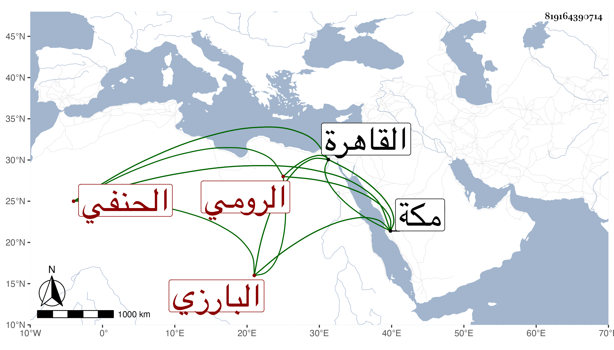

0902Sakhawi.DawLamic.ITO20230111-ara1.EIS1600.819164390714
Biography ID: 819164390714
800
علي بن عبد الرحمن بن عبد الرزاق بن عبد الكريم بن عبد الله العلاء البارزي الرومي الحنفي نزيل مكة . ولد بعد العشرين وثمانمائة بسنتين أو ثلاث ببلاد الروم ونشأ بها فاشتغل على ابن قاضي خصرشاه والصدر والسراج ويوسف الروميين وغيرهم ، ثم ارتحل إلى القاهرة فوصلها في أثناء سنة أربع وأربعين فأخذ عن ابن الديري والأمين الأقصرائي وغيرهما ولازم شيخنا ، ثم سافر لمكة مع الرجبية في أثناء سنة سبع وأربعين فأقام برباط ربيع منها إلى أثناء سنة سبعين فتوجه منها إلى القاهرة . ومات بها في طاعون سنة ثلاث وسبعين تقريبا وكان فاضلا . ذكره ابن فهد .
